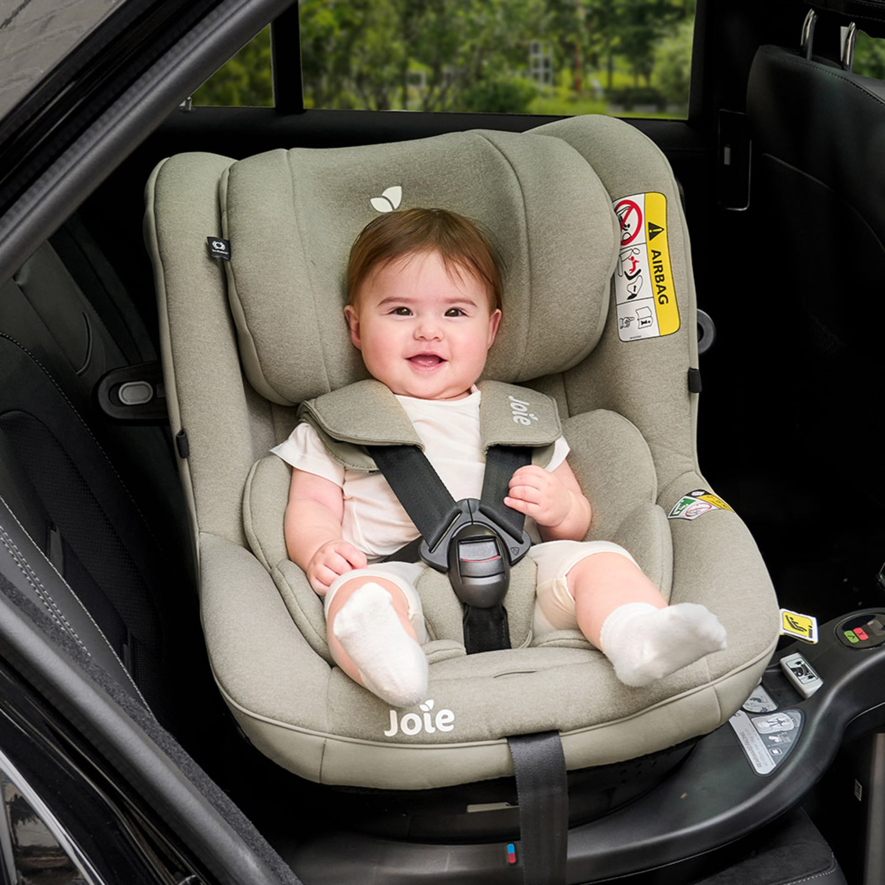
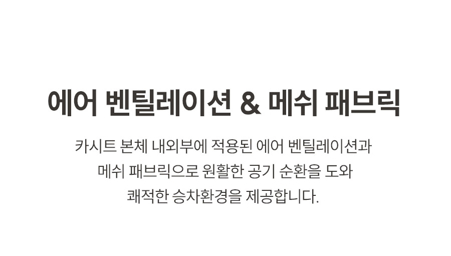
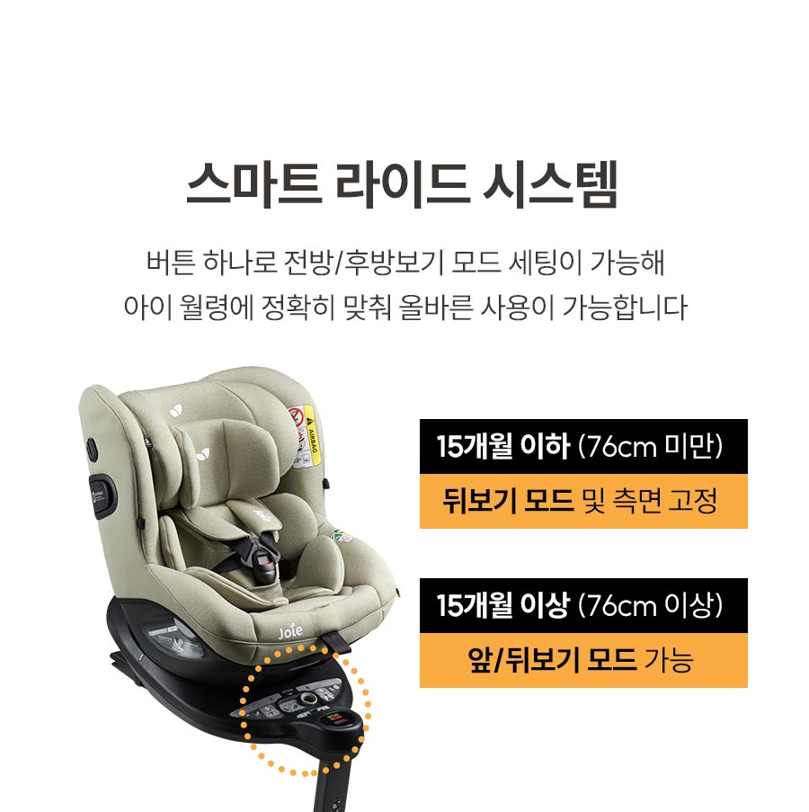
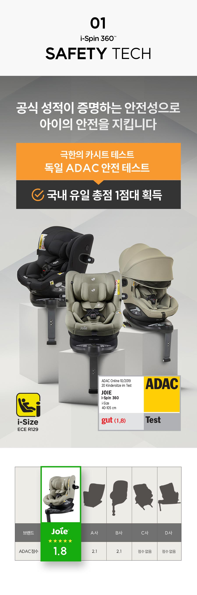
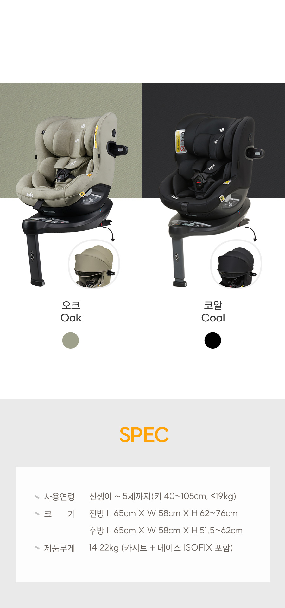
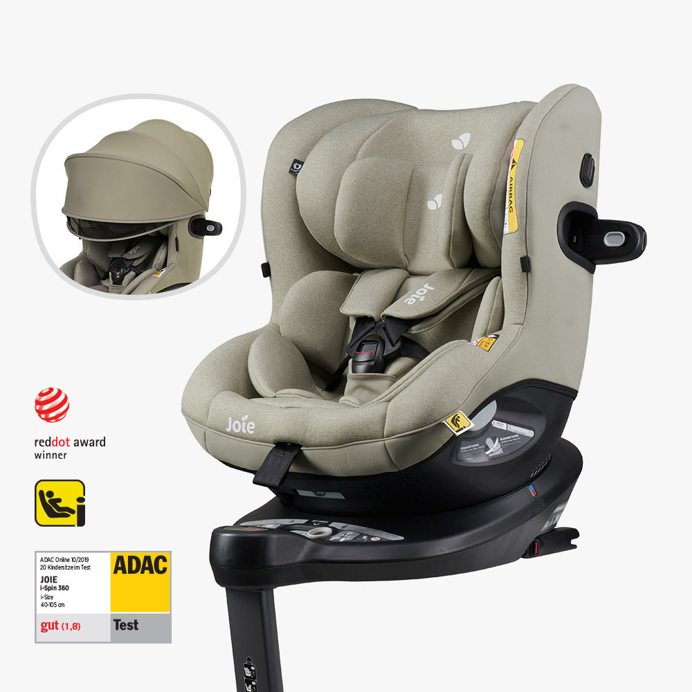

잠든 뒤 더 신경 쓰이는 고개
고개가 앞으로 쏠릴까 봐, 아이가 깰 때마다 자세부터 확인하게 됩니다.
주말마다 왕복 2시간을 달리는 동안, 잠든 아이의 고개가 쏠릴까 백미러만 보고 계신가요?
깊은 리클라이닝과 인텔리핏 메모리폼 헤드레스트가 잠든 아이의 자세를 받치고, 매쉬 패브릭과 측면 통풍구가 공기 순환을 돕습니다. 360도 회전으로 승하차도 한결 수월해집니다.
깊은 리클라이닝·헤드레스트·통풍 구조·360도 회전이 우리 아이와 차량 환경에 맞는지, 현재 쿠팡 옵션과 가격에서 직접 확인하세요.
이 포스팅은 쿠팡 파트너스 활동의 일환으로, 이에 따른 일정액의 수수료를 제공받습니다.
지금은 구매하지 않아도 됩니다. 옵션, 배송·반품 조건을 확인한 뒤 결정하세요.

잠든 뒤 고개가 앞으로 쏠리진 않는지, 등에 열이 차진 않는지. 운전 중에도 백미러를 다시 보게 되면 아이도 부모도 이동 내내 편히 쉬기 어렵습니다.
고개가 앞으로 쏠릴까 봐, 아이가 깰 때마다 자세부터 확인하게 됩니다.
오래 앉아 있는 동안 등이 답답해 보이면, 목적지보다 아이 컨디션이 먼저 걱정됩니다.
한 번 더 백미러를 보고, 휴게소에 들러 자세를 살피는 일이 반복됩니다.
그래서 필요한 건, 아이의 자세와 승하차 동선을 함께 생각한 자리입니다.
↓조이 아이스핀 360은 잠든 아이의 자세, 오래 앉아 있을 때의 열감, 태우고 내리는 동선을 한 자리에서 고려한 회전형 카시트입니다.
6단계 시트 각도 조절과 인텔리핏 메모리폼 헤드레스트가 아이 컨디션에 맞춰 자세를 받치는 데 도움을 줍니다.
양옆 헤드레스트와 5점식 안전벨트가 보이는 실제 장착 모습 (아이의 체형과 차량 시트 각도에 맞춰 설치·조절이 필요합니다.)

매쉬 패브릭과 본체 안팎의 에어 벤틸레이션이 공기 순환을 돕습니다.
본체 안팎의 에어 벤틸레이션과 매쉬 패브릭 안내 (폭염에서는 아이 컨디션에 따라 별도 쿨시트를 함께 고려하세요.)

양옆 심플 스위블 레버로 시트를 360도 회전해, 아이를 안은 채 깊이 숙여 들어가는 동작을 줄이는 데 도움을 줍니다.
회전 베이스와 아이 월령·신장에 따른 사용 모드 안내 (주행 전에는 시트가 전방 또는 후방으로 완전히 고정됐는지 확인하세요.)
수면 자세와 승하차의 편의만큼, 카시트의 규격과 시험 결과도 구매 전 함께 확인하세요.

i-Size 표기와 2019년 ADAC 테스트 결과를 보여 주는 제품 안내 이미지
최신 유럽 안전 규격 i-Size 인증을 확인했습니다.
2019년 10월 테스트 결과
2019년 10월 독일 ADAC 카시트 테스트 결과입니다.
“주말 왕복 4시간 이동에서, 6단계 각도 조절 뒤 잠들었을 때 고개가 앞으로 쏠리던 불편이 줄었다”고 말합니다.
개인 사용 경험이며 아이 체형·차량 시트 각도에 따라 다를 수 있습니다.
“좁은 주차 공간에서도 시트를 문 쪽으로 돌려 아이를 태우고 내리기 수월했다”는 경험이 확인됩니다.
개인 사용 경험이며 차량 문 폭과 설치 환경에 따라 다를 수 있습니다.
카시트는 아이 체형과 차량 구조에 따라 체감이 달라집니다. 아래 세 가지만 먼저 체크해 보세요.

차량 장착 전 ISOFIX 사용 가능 여부와 실제 공간을 확인하세요.
세 가지를 확인했다면, 현재 쿠팡 옵션과 판매 조건을 비교할 준비가 됐습니다.
이 제품은 ISOFIX 전용입니다. 차량 뒷좌석의 ISOFIX 앵커 사용 가능 여부를 차량 설명서에서 먼저 확인하세요. 일반 3점식 안전벨트만으로는 설치할 수 없습니다.
후방 장착 기준 크기는 길이 65cm × 폭 58cm × 높이 51.5~62cm입니다. 준중형 세단에서는 조수석 레그룸이 좁아질 수 있으므로, 조수석에 키 큰 성인이 자주 탄다면 장착 전 공간을 확인하세요.
매쉬 패브릭과 측면 통풍구는 공기 순환을 돕습니다. 다만 폭염에는 아이의 열감과 컨디션을 살피고, 필요하면 별도 쿨시트를 함께 고려하세요.
ISOFIX 설치 가능 여부와 차량 공간을 확인했다면, 조이 아이스핀 360의 현재 옵션·가격·판매 조건을 쿠팡에서 살펴볼 차례입니다.
이 포스팅은 쿠팡 파트너스 활동의 일환으로, 이에 따른 일정액의 수수료를 제공받습니다.
화면의 버튼은 현재 연습용입니다. 실제 구매 전에는 쿠팡에서 옵션, 배송·반품 조건을 다시 확인하세요.

조이 아이스핀 360 오크 색상 제품 모습